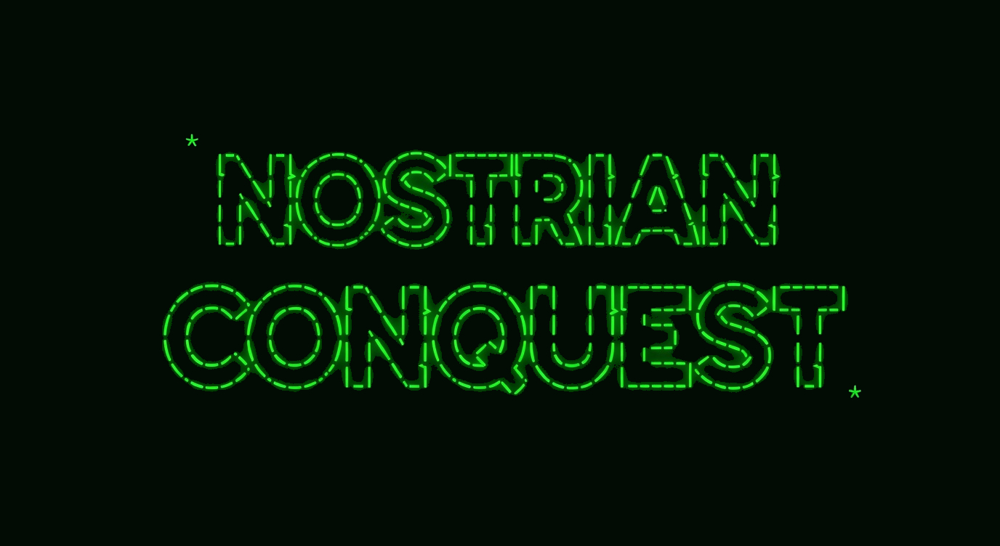

IDENTITY: nc_sysop@nostrian-conquest.com
RELAY: wss://relay.nostrian-conquest.com
ACCESS POINTS
THE NOSTRIAN CONQUEST HAS BEGUN.
WANT TO SEE THE CLIENT FIRST? OPEN SCREENSHOTS.
LOOKING FOR A CLIENT BUILD? OPEN DOWNLOADS.
LOOKING FOR A LIVE GAME? START ON DISCORD.
>
Nostrian Conquest is an asynchronous multiplayer sci-fi strategy game inspired by the classic 1990s BBS door game Esterian Conquest. It is built for players who like old-school depth, patience, and imagination. Print your starmaps, plan your moves, and come back with your next turn’s orders. Built on the Nostr protocol for decentralized play.